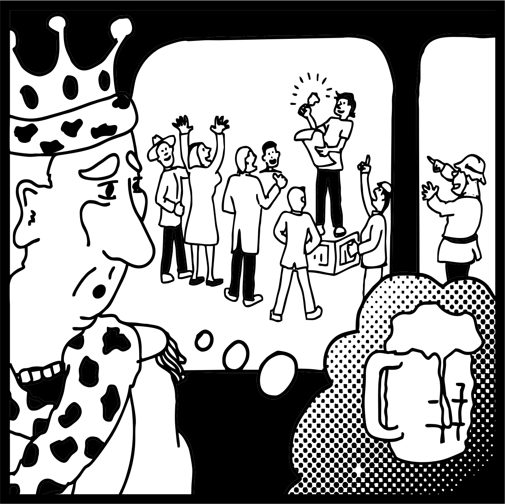

Before Yarvin's Cathedral there was Eric S. Raymond's cathedral and bazaar. The bazaar was the trading place: noisy, distributed, unfinished, many hands solving problems in public. The cathedral was software built behind walls and released from above. The later political metaphor bends the topology almost inside out. Yarvin calls a diffuse network of universities, media and institutions the Cathedral, then reaches toward concentrated sovereign power as the cure. The older hacker answer ran the other direction: do not find a better king. Open the gates and let the bazaar work. That inversion matters here. Web3 repeatedly builds the bazaar and then puts a landlord over it. The protocol is permissionless until the useful interface needs the founder's server; the identity is sovereign until the naming layer is owned; governance is distributed until an investor, foundation, sequencer or admin key gets the final thumb on the scale. The technology removes the tollbooth and the business model quietly builds another one.

The king saw the crowd and smiled. He thought every bell rang for his pleasure and every gathering existed by his permission.
That is the second lie of every ruler.
The modern king may be the programmer. Yarvin gives him a theory and Thiel gives the theory capital: the builder becomes sovereign because he understands the machine. But this is the old crown translated into code. Web3 repeats the error whenever it decentralizes the mechanism and then restores a founder, platform, investor, admin key or rent collector above it. The experiment is spoiled by the thumb on the scale.
The harder rule is the opposite: build the bell so the bell does not need its maker. In the Wake, Ma.ma.lu hangs nearby as another recursive mother-language, a voice that survives ownership and outruns the person who first uttered it.
The crown approaches the square expecting refreshment. It has not yet understood that the public has assembled without permission. The programmer's strongest design is not the one that makes the programmer king. It is the one that continues after the programmer disappears. A bazaar that requires its architect's permission is still a cathedral wearing market clothes.